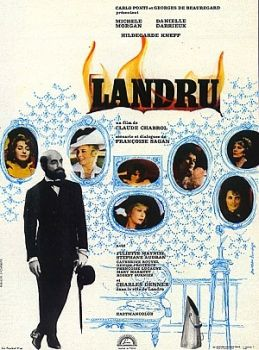

Claude Chabrol
1963
115 minutes
This is a film by Claude Chabrol, one of the more conventional of the French New Wave directors, about a notorious historical French serial killer. The French title is Landru and the film deals with Henri Landru, who murdered more than ten women during WWI. Most of his targets were lonely war widows whom he met through newspaper ads. He would defraud them of their money, kill them, and then burn their bodies in his oven.
For some reason when you search this in Google it comes up as a "crime/comedy". You have a pretty dark sense of humor, but gee wiz... It is a little bit darkly funny how often they show smoke coming out of his chimney and the neighbors complaining about the smell.
All in all it's actually a pretty interesting film told almost entirely from the point of view of the villain, which is kind of fun. And it is pretty funny to see how whiny he gets during his criminal trial, one of those "trial of the century" affairs which was conveniently timed as a political distraction from the negotiation of the Treaty of Versailles. This bit goes a little over your head, and you should probably hit Wikipedia at some point to clear up why--though opening anything WWI related on that site usually ends up being a can of worms that leaves you no more enlightened than you started. Maybe it's best just to absorb a little more of the mythos so that you can piece the story of that war together later from scraps like this...
Time to choose something different: